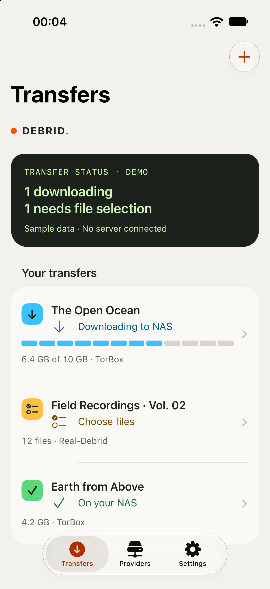
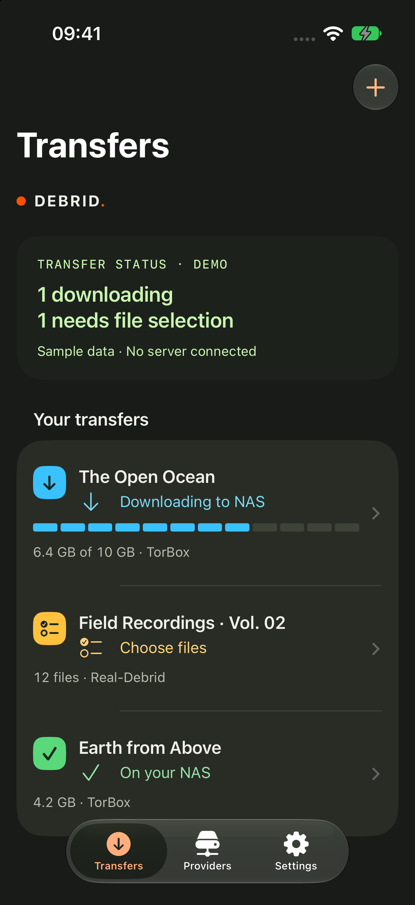

SwiftUI implementation · iOS 27.0 simulator.
Debrid’s orange mark, warm surfaces, LCD status and phase colors inside native navigation, toolbar controls and floating tabs. Fictional data.


Apple HIG and WWDC26 research; Emil’s design engineering, Apple design and Swift skills applied to design and code. Two native interaction tests and three domain test functions pass. Signed-device and full VoiceOver validation remain pending.